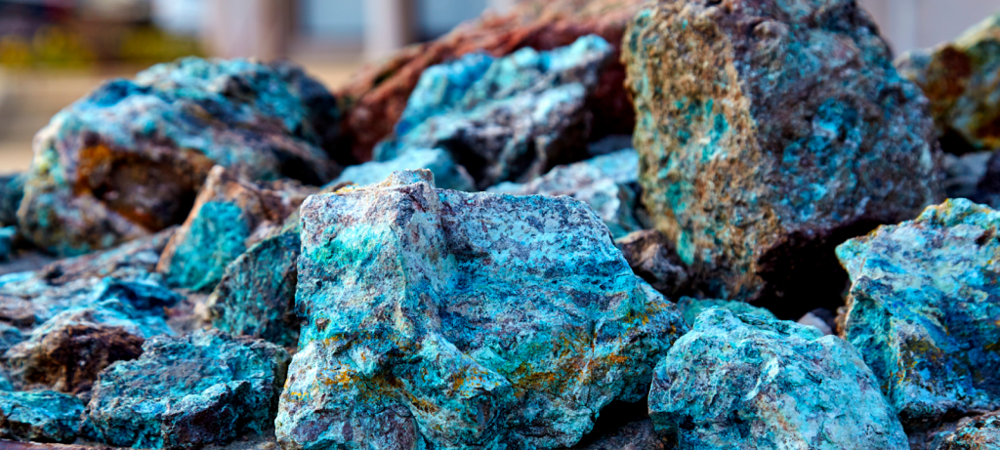
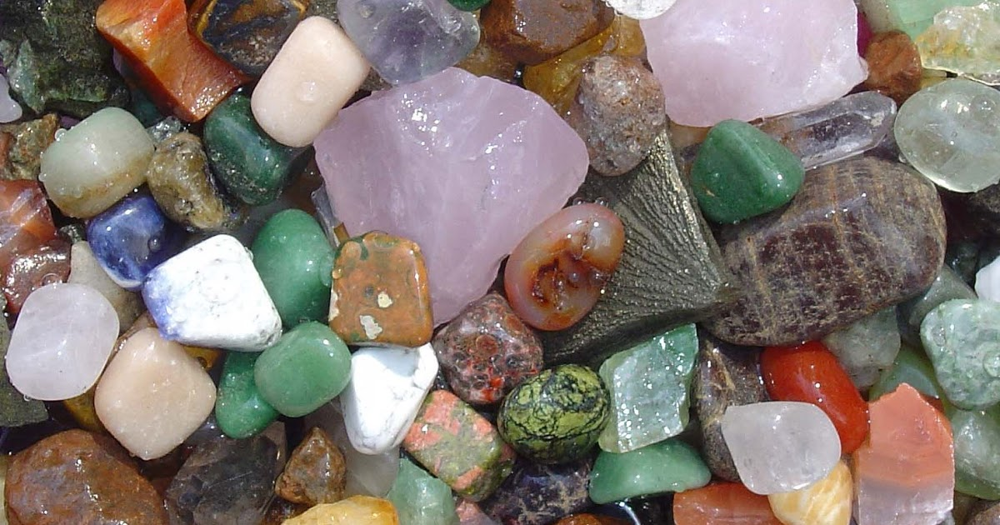

Recursos Minerais
Recursos minerais são substâncias extraídas da terra que possuem valor econômico e utilidade para a sociedade. Esses recursos são fundamentais para a produção de uma ampla variedade de produtos e para o funcionamento da economia global. Eles podem ser classificados em diferentes categorias com base em suas propriedades e usos:
Metálicos:
Ferro (Fe): Usado principalmente na produção de aço, essencial para a construção civil e fabricação de automóveis.
Alumínio (Al): Utilizado em embalagens, construção, aviação e indústrias automotiva e elétrica.
Cobre (Cu): Essencial para a produção de fios e cabos elétricos, eletrônicos e construção civil.
Ouro (Au): Usado em joalheria, eletrônicos e como reserva de valor.
Prata (Ag): Aplicada em joalheria, eletrônicos, fotografia e em algumas moedas.
Não Metálicos:
Calcário: Utilizado na produção de cimento, como corretivo de solo na agricultura e em várias indústrias químicas.
Areia e cascalho: Essenciais para a construção civil, usados em concreto e pavimentação.
Argila: Utilizada na fabricação de cerâmica, tijolos e cimento.
Sal (NaCl): Usado em alimentação, conservação de alimentos, produção de cloro e soda cáustica.
Energéticos:
Carvão: Fonte importante de energia, utilizada na geração de eletricidade e na produção de aço.
Petróleo: Base para a produção de combustíveis (gasolina, diesel, querosene) e produtos petroquímicos (plásticos, fertilizantes).
Gás Natural: Utilizado para geração de energia elétrica, aquecimento, e como matéria-prima na indústria química.
Uranio: Utilizado como combustível em usinas nucleares para geração de energia elétrica.
Importância dos Recursos Minerais
Os recursos minerais são essenciais para o desenvolvimento econômico e tecnológico. Eles proporcionam matéria-prima para indústrias fundamentais, contribuem para a geração de empregos e são uma fonte significativa de receitas para muitos países. No entanto, a exploração de recursos minerais deve ser feita de maneira sustentável para minimizar os impactos ambientais e sociais.
Desafios na Exploração dos Recursos Minerais
Sustentabilidade: A mineração pode causar desmatamento, poluição da água e do solo, e perda de biodiversidade. Estratégias para mitigar esses impactos incluem a recuperação de áreas degradadas e o uso de tecnologias menos agressivas ao meio ambiente.
Especulação e volatilidade de preços: Os preços dos recursos minerais podem ser altamente voláteis, o que pode impactar economias dependentes de exportação de minerais.
Conflitos e questões sociais: Em algumas regiões, a exploração de minerais está associada a conflitos sociais, violação de direitos humanos e trabalho infantil.